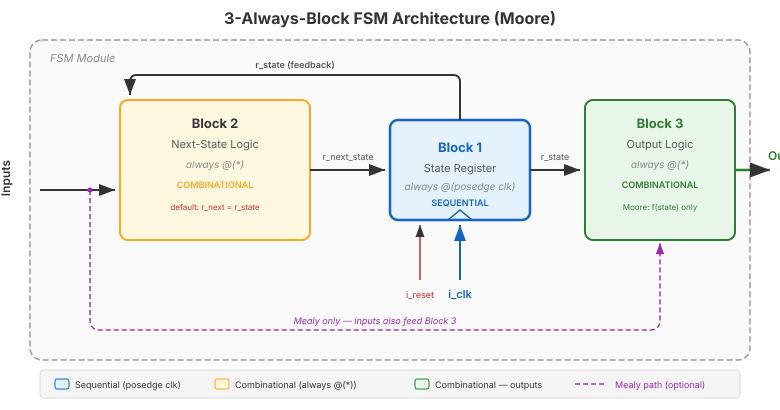

Video 1 of 4 · ~12 minutes
Dr. Mike Borowczak · Electrical & Computer Engineering · CECS · UCF
An FSM is a sequential circuit defined by:
A finite set of states (always in exactly one)
Transitions governed by input conditions
Outputs that depend on state (and possibly inputs)
| Moore | Mealy | |
|---|---|---|
| Outputs depend on | State only | State + inputs |
| Output changes | On clock edge (with state) | Can change mid-state |
| Timing | Clean, stable | Faster reaction, possible glitches |
| States needed | Typically more | Typically fewer |

① FSM = states + transitions + outputs. Every controller is an FSM.
② Moore (outputs = f(state)) is our default — safe, clean timing.
③ Mealy (outputs = f(state, inputs)) — faster but can glitch.
④ Three blocks: state register, next-state logic, output logic.
Up Next
Video 2 of 4 · ~15 minutes
The coding pattern you'll use for every FSM in your career.